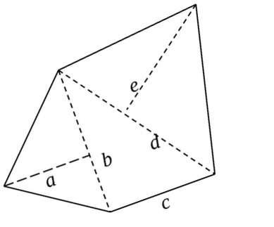

一圓柱蓄水池，其圓內半徑 r 為 20m ，而高 h 為 10m ， 其相應的變方協變方矩陣為 Σ 。 （單位 mm2 ）令 V 為該蓄水池的容量， 試計算 σVr 及σV 為何 (6%)
V = h π r2
σV = 1.0817m
今有一五邊形 ( 如下圖所示) 欲計算其面積， 將其分成三個三角形，並量測各自的底邊及高的邊長及中誤差如下所示， 至於觀測量之相關係數除 ρ_ab 0.02 ; ρ_bc -0.02 外， 其他皆為零；請列出這五個觀測量的變方協變方矩陣為何 (4%)? 計算該五邊形的面積及中誤差為何 (6%) ?

a = 15.000m ± 0.015m
b = 25.200m ± 0.020m
c = 20.500m ± 0.018m
d = 32.485m ± 0.030m
e = 30.600m ± 0.025m
area = 0.5 * ( a b + b c + d e ) = 944.3205
σarea2 = A Σ AT = 0.0001690m ; σarea = 0.01300
承上題，請計算此三個三角形面積的變方協變方矩陣。 *( 9 % )*
一圓柱蓄水池，其圓內半徑 r 為 20m ，而高 h 為 10m ， 其相應的變方協變方矩陣為 Σ 。 （單位 mm2 ）令 V 為該蓄水池的容量， 試計算 σVr 及σV 為何 (6%)
V = h π r2
σV = 1.0817m
今有一五邊形 ( 如下圖所示) 欲計算其面積， 將其分成三個三角形，並量測各自的底邊及高的邊長及中誤差如下所示， 至於觀測量之相關係數除 ρ_ab 0.02 ; ρ_bc -0.02 外， 其他皆為零；請列出這五個觀測量的變方協變方矩陣為何 (4%)? 計算該五邊形的面積及中誤差為何 (6%) ?
a = 15.000m ± 0.015m
b = 25.200m ± 0.020m
c = 20.500m ± 0.018m
d = 32.485m ± 0.030m
e = 30.600m ± 0.025m
area = 0.5 * ( a b + b c + d e ) = 944.3205
σ<sub>area</sub><sup>2</sup> = A Σ A<sup>T</sup> = -0.0001690m
承上題，請計算此三個三角形面積的變方協變方矩陣。 *( 9 % )*
PP 100 Problem 6.18 ( 10%)
X × Y = 1600.005±0.004 × 250.253±0.003 2 X + π Y = 3986.203 σs2 = A Σ AT = 0.04561 ;
A = [ 0.008 0.009425 ] ; σs = 0.0007228 X Y + Y2 π/4
= 449592.8396 σA2 = A Σ AT = 12167.8669 ;
A = [ 1.0010 5.9793 ] ;
σA = 0.3336 ; PP 100 6.21 ( 8 %)
H = L cos a ; σH2 = ( σL cos α )2 +
( - σα L sin α )2 ; CT = k ( Tf - T ) L ; σCT
= σTf k L CP = ( Pf - P ) L ÷ A E ;
σP = σPf L ÷ A E CS = - w2 lS3 ÷ 24 Pf2 ;
σCS
= w2 lS3 ÷ 12 Pf3 σPf PP 126 Problem 7.8 ( 4 %)
σD2 = σi2 + σt2 + a2 + ( D × b ppm )2
= 0.00152 + 0.00152 + 0.0032 + ( 540268 × 3ppm )2
= 2.6285mm
PP 127 Problem 7.10 (4%) ；
PP 127 Problem 7.13 (6%)
| σa | σai | σat | |
|---|---|---|---|
| A | 5.5077 | 2.7007 | 5.5077 |
| B | 5.5197 | 1.7856 | 5.5197 |
| C | 4.9509 | 2.6153 | 4.9509 |
| D | 4.9375 | 1.5270 | 4.9375 |
t(0.025,4) = 2.776 ;
12.3832 × t = 34.3758 > 15
符合 95% 的信心水準。
PP 128 Problem 7.17 (6%)
| σai | σat | σa | |
|---|---|---|---|
| A | 4.5716 | 5.5077 | 7.2704 |
| B | 2.1162 | 5.5197 | 6.0473 |
| C | 4.7262 | 4.9508 | 6.9622 |
| D | 3.3261 | 4.9375 | 6.0882 |
| E | 3.5165 | 4.1771 | 5.6070 |
t(0.025,4) = 4.303 ;
14.3544 × t = 61.7670 > 18
符合 95% 的信心水準。
PP 146 Problem 8.8 ( 10%)
360 - Σ∠ = 20 ″
( Σ σ ∠2 )0.5 = 5.8172
5.8172 t(0.025,3) = 18.5103 ″ < 20 ″
符合標準。
PP 146 Problem 8.10 ( 10%)
φ BC = φ AB - 180 +
θ ABC
| Azimuth | σ | |
|---|---|---|
| AB | 166.5736 | 0 |
| BC | 68.5206 | 2.6000 |
| CD | 337.9347 | 3.9699 |
PP 147 Problem 8.14 (10%)
| course | computed azimuth |
|---|---|
| XY | 0.6789 |
| YZ | 1.0192 |
computed azimuth YZ - control azimuth YZ = 10 ″ ;
estimated error of azimuth = √( σWXY2 σXYZ2 ) = 9.8737 ″ ;
misclosure LC = √( ΔLat2 + ΔDep2 ) = 0.02595 ;
estimated LC 95% confidence = 12.710 √ 0.000035381
= 0.075601 > LC ;
符合 95% 信心水準。
PP 162 Problem 9.1 ； 9.3 (10%)
PP 163 Problem 9.15 ( 7 %)
# 測量平差作業二 Date line Apr.07.2016 08:15 # 1. 一圓柱蓄水池，其圓內半徑 r 為 20m ，而高 h 為 10m ， 其相應的變方協變方矩陣為 Σ 。 （單位 mm2 ）令 V 為該蓄水池的容量， 試計算 σVr 及σV 為何 (6%) $`V = h π r^2 ` $`σ_V = 1.0817m` 2. 今有一五邊形 ( 如下圖所示) 欲計算其面積， 將其分成三個三角形，並量測各自的底邊及高的邊長及中誤差如下所示， 至於觀測量之相關係數除 ρ_ab 0.02 ; ρ_bc -0.02 外， 其他皆為零；請列出這五個觀測量的變方協變方矩陣為何 (4%)? 計算該五邊形的面積及中誤差為何 (6%) ?  a = 15.000m ± 0.015m b = 25.200m ± 0.020m c = 20.500m ± 0.018m d = 32.485m ± 0.030m e = 30.600m ± 0.025m area = 0.5 * ( a b + b c + d e ) = 944.3205 σarea2 = A Σ AT = -0.0001690m 3. 承上題，請計算此三個三角形面積的變方協變方矩陣。 *( 9 % )* ---------------------------------------------------- ## 教科書 ## - PP 100 Problem 6.18 ( 10%) + 矩形：X × Y = 1600.005±0.004 × 250.253±0.003+ 觀測量 _變方協變方矩陣_ ： + 周長：2 X + π Y = 3986.203+ 周長標準差： $` σ_s^2 = A Σ AT = 0.04561 ; A = [ 0.008 0.009425 ] ; σ_s = 0.0007228 ` + 面積：X Y + Y2 π/4 = 449592.8396+ 面積標準差： $` σ_A^2 = A Σ A^T = 12167.8669 ; A = [ 1.0010 5.9793 ] ; σ_A = 0.3336 ; ` - PP 100 6.21 ( 8 %) 1. $` H = L cos a ; σ_H^2 = ( σ_L cos α )^2 + ( - σ_α L sin α )^2 ; ` 2. $` C_T = k ( T_f - T ) L ; σ_CT = σ_Tf k L` 3. $` C_P = ( P_f - P ) L ÷ A E ; σ_P = σ_Pf L ÷ A E ` 4. $` C_S = - w^2 l_S^3 ÷ 24 P_f^2 ; σ_CS = w^2 l_S^3 ÷ 12 P_f^3 σ_Pf ` - PP 126 Problem 7.8 ( 4 %) $`σ_D^2 = σ_i^2 + σ_t^2 + a^2 + ( D × b ppm )^2 = 0.0015^2 + 0.0015^2 + 0.003^2 + ( 540268 × 3ppm )^2 = 2.6285mm` - PP 127 Problem 7.10 (4%) ； - PP 127 Problem 7.13 (6%)
| σa | σai | σat | |
|---|---|---|---|
| A | 5.5077 | 2.7007 | 5.5077 |
| B | 5.5197 | 1.7856 | 5.5197 |
| C | 4.9509 | 2.6153 | 4.9509 |
| D | 4.9375 | 1.5270 | 4.9375 |
| σai | σat | σa | |
|---|---|---|---|
| A | 4.5716 | 5.5077 | 7.2704 |
| B | 2.1162 | 5.5197 | 6.0473 |
| C | 4.7262 | 4.9508 | 6.9622 |
| D | 3.3261 | 4.9375 | 6.0882 |
| E | 3.5165 | 4.1771 | 5.6070 |
| Azimuth | σ | |
|---|---|---|
| AB | 166.5736 | 0 |
| BC | 68.5206 | 2.6000 |
| CD | 337.9347 | 3.9699 |
| course | computed azimuth |
|---|---|
| XY | 0.6789 |
| YZ | 1.0192 |